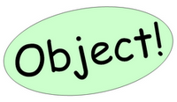

3.8.- La clase Object en Java.

Todas las clases en Java son descendientes (directos o indirectos) de la clase Object. Esta clase define los estados y comportamientos básicos que deben tener todos los objetos. Entre estos comportamientos, se encuentran:
- La posibilidad de compararse.
- La capacidad de convertirse a cadenas.
- La habilidad de devolver la clase del objeto.
Entre los métodos que incorpora la clase Object, y que por tanto hereda cualquier clase en Java, tienes:
| Método | Descripción |
|---|---|
Object () |
Constructor. |
clone () |
Método clonador: crea y devuelve una copia del objeto ("clona" el objeto). |
boolean equals (Object obj) |
Indica si el objeto pasado como parámetro es igual a este objeto. |
void finalize () |
Método llamado por el recolector de basura cuando éste considera que no queda ninguna referencia a este objeto en el entorno de ejecución. |
int hashCode () |
Devuelve un código hash para el objeto. |
toString () |
Devuelve una representación del objeto en forma de String. |
La clase Object representa la superclase que se encuentra en la cúspide de la jerarquía de herencia en Java. Cualquier clase (incluso las que tú implementes) acaban heredando de ella.
Los hash o funciones de resumen son algoritmos que crean a partir de una entrada (por ejemplo un texto o un archivo) una salida alfanumérica de longitud normalmente fija. Esa cadena de salida representa un resumen de toda la información que la función ha recibido como entrada. A partir de los datos de la entrada se crea una cadena que solo puede volverse a crear con esos mismos datos. Por eso se dice a veces que es algo así como una especie de "firma" o "resumen" de esos datos.
Para saber más
Para obtener más información sobre la clase Object, sus métodos y propiedades, puedes consultar la documentación de la API de Java en el sitio web de Oracle.
Autoevaluación
Retroalimentación
Verdadero
Dado que la clase Object tiene esos métodos y puesto que cualquier clase Java tiene como superclase (más o menos directa) a la clase Object, cualquier clase Java heredará esos métodos.